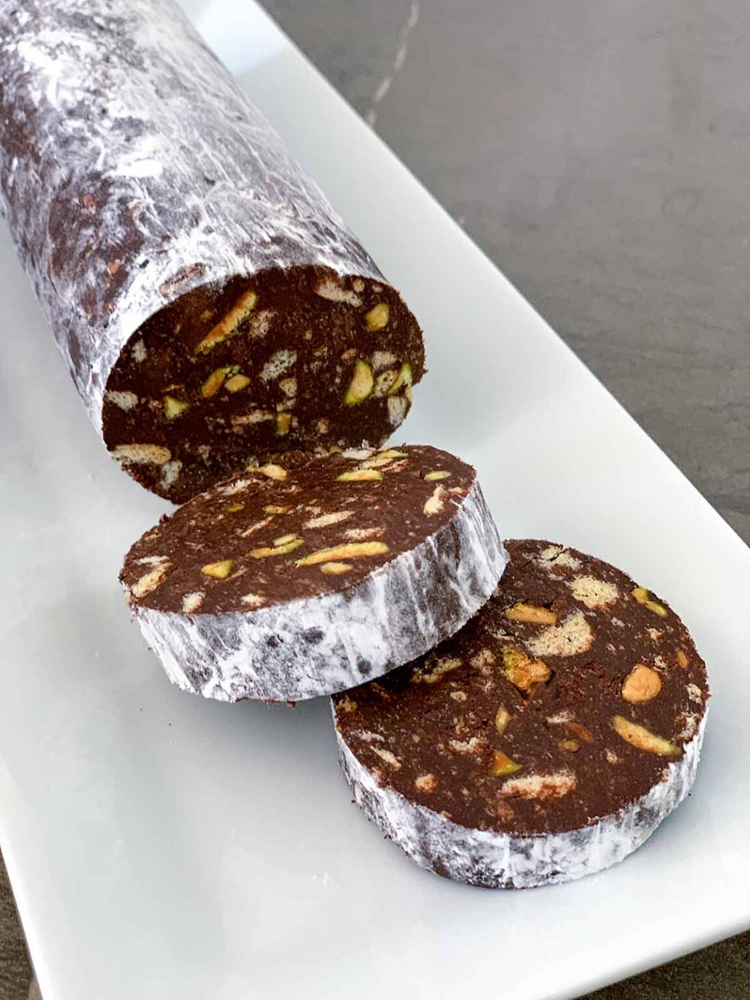

There are all sorts of cuisine in the world, so... why not a portuguese one? This will include an appetizer, a main course and finally, a dessert!
Note: click on the images instead of the recipe name.
Stuffed bread with chorizo
Codfish with cream

Chocolate salami
